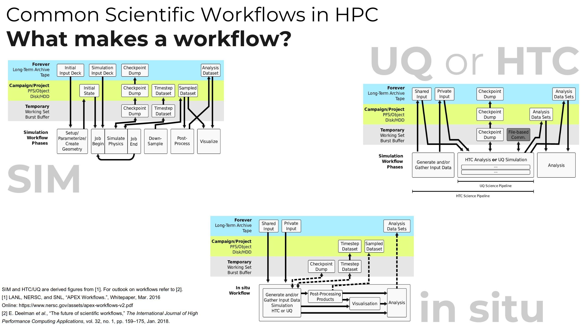
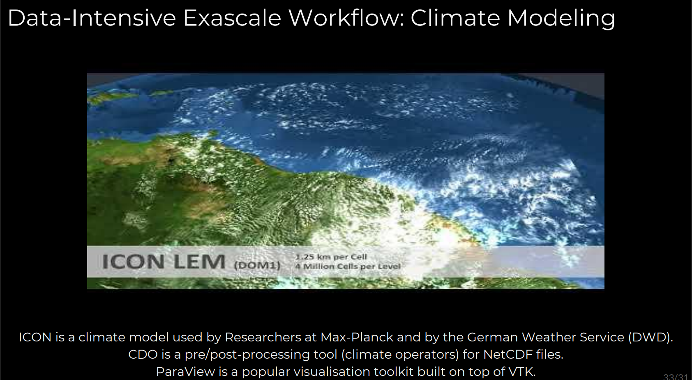
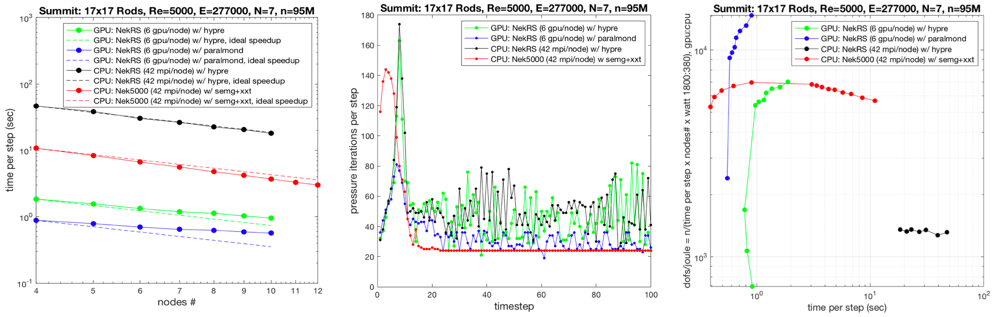

32) I/O in HPC#
Last time:
ISPC
OpenMP and OpenACC
Today:
Hiding latency
Examples of HPC File Systems
2.1 Summit File Systems
1. Hiding latency#
Throughout this course, we’ve discussed ways in which computer architecture and algorithms hide latency.
instruction-level parallelism
SMT/SIMT multi-threading
memory prefetch
organizing data structures for streaming access and cache reuse
tiling, etc.
But the reality is that file latency is vastly higher than memory.
using IJulia
html"""<iframe src="https://people.eecs.berkeley.edu/~rcs/research/interactive_latency.html" width="1200" height="700"></iframe>"""
Device |
Bandwidth (GB/s) |
Cost ($/TB) |
Seek Latency (\(\mu\)s) |
|---|---|---|---|
7200 RPM disk |
0.3 |
30 |
>3000 |
SSD (SATA 3.0) |
0.6 |
70-80 |
15-50 |
SSD/NVMe (PCIe-3 x4) |
3 |
120-1000 |
10-20 |
DRAM DDR4 |
25 |
5000 |
0.1 |

Guess which one is one of the most data-intense application field?

The most used file formats are:
NetCDF (Network Common Data Form)
(parallel) HDF5
How much storage bandwidth does a simulation need?#
Example: NEK5000 (CFD application)

2. Examples of HPC File Systems#
wall_clock_per_timestep = 0.6
dofs_per_node = 1800 * 1e4
MBps_per_node = dofs_per_node * 8 / wall_clock_per_timestep / 1e6
dofs = 95e6
MBps = dofs * 8 / wall_clock_per_timestep / 1e6
(MBps_per_node, MBps)
(240.0, 1266.6666666666667)
seconds_per_day = 24 * 60 * 60
TB_per_day = MBps * seconds_per_day / 1e6 # TB
TB_per_day
109.44
What if all nodes in a cluster used storage at this rate?
MBps_per_node * 4600 / 1e6 # TB/s
1.104
TB_per_day * 4600 / 8 / 1e3 # PB/day
62.928
2.1 Summit File Systems#
Capacity: 250 PB
Theoretical Bandwidth: 2.5 TB/s